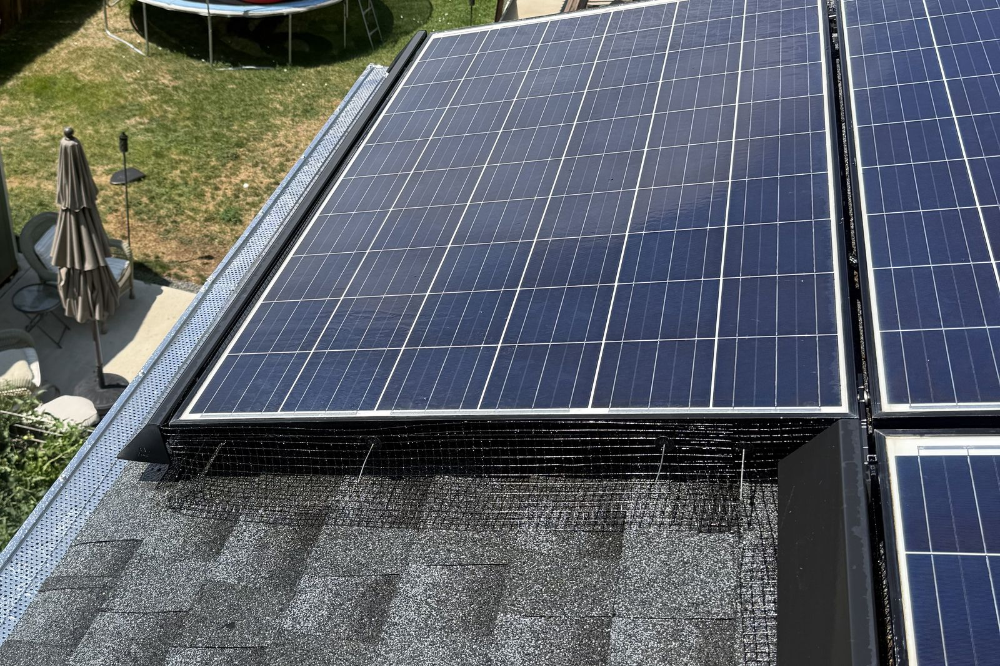
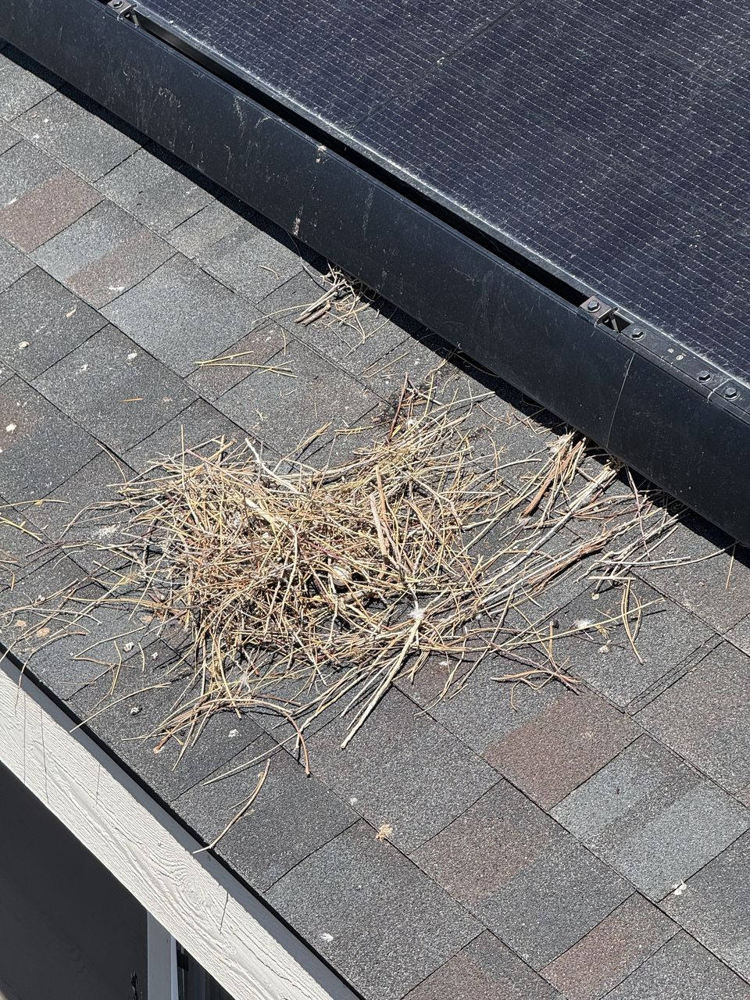

Colorado Springs Critter Guard & Bird Proofing
Solar Panel Critter Guard Installation in Colorado Springs
Fitted solar-array mesh that closes the gap where pigeons and squirrels nest — typically $1,095–$1,195, published pricing, a LIFETIME workmanship guarantee, and photo proof on every job.
If you live in Colorado Springs and you have solar panels, there is a good chance pigeons have already found the space underneath them. It's warm, it's dry, it's sheltered from hawks and weather — from a pigeon's perspective, the underside of a rooftop array is the best nesting real estate in El Paso County. Squirrels agree. The result is cooing at dawn, droppings down the side of your house, nesting material packed against your roof — and, quietly, chewed wiring and debris dams that trap moisture against your shingles.
We're Jeremy and Meral Runnels, the husband-and-wife team behind Mile High Solar Care. We install professional critter guards across Colorado Springs every week, and bird proofing is one of the most common reasons Springs homeowners call us. A critter guard is the permanent fix: solar-array mesh fitted around the full perimeter of your system, closing the gap between the panels and the roof so nothing can move in — this winter, or any winter after.
Why the Springs has it worse than most places
Pigeons are a Front Range problem everywhere, but Colorado Springs stacks the deck:
- Established pigeon populations across the city — around downtown, Old Colorado City, and the older neighborhoods with mature trees — means constant pressure on any unguarded array.
- Mild, sunny winters keep birds active and nesting year-round instead of seasonally, and the sheltered under-array space stays warm enough to raise young even in January.
- Newer subdivisions aren't exempt — Briargate, Stetson Hills, and the Powers corridor have newer roofs but the same birds, and a new array with no guard is an open invitation from day one.
- Multiple pest companies compete on exactly this problem here — which tells you how common it is. What most of them sell is pest control. What your panels need is a solar-specific guard, installed by people who work on arrays every day and know what they're allowed to touch.
What a critter guard actually does
A professional critter guard is a PVC-coated wire mesh system custom-fitted around the accessible perimeter of your array. It closes the entry gap completely — no nesting, no debris buildup, no animals chewing on the wiring runs under your panels — while still allowing the airflow your panels need. Done right, it's nearly invisible from the street, it doesn't drill into your panels, and it doesn't interfere with the system in any way.
It also matters how it's installed. Our method is warranty-conscious: no fasteners into the panel frames in ways manufacturers prohibit, no shortcuts with chicken wire or loose netting that sag, rust, and fail within a season or two. (We wrote the full honest comparison in our pigeon-proofing guide — including why the chicken-wire jobs we get called to fix were worse than nothing.)

What it costs — the real numbers
A typical residential critter guard installation with us in Colorado Springs runs $1,095–$1,195 — and every installation carries our LIFETIME workmanship guarantee: we stand behind the workmanship for the life of the array.
We publish that because most of this industry won't. Per-foot pricing that sounds small and lands large, "starting at" numbers that assume a roof nobody has — we'd rather give you the real typical range up front. Your final price is confirmed after a photo and roof-access review, and it depends on the things that genuinely change the job: panel count and array layout, roof pitch and perimeter length, whether there's existing nesting to clear out first, and safe access. If there's an established nest under your array, we clear the debris as part of getting the guard on — you shouldn't pay to seal animals in.
If you already have a guard that's failing — a section pulled loose, a gap where something is getting in — limited guard repair starts at $300 for a small, accessible section, confirmed by photo review.
Signs your Springs array needs a guard
- Cooing, scratching, or fluttering sounds from the roof, especially at dawn
- Droppings on the panels, the roof below the array, or the ground and patio beneath it
- Feathers, sticks, or nesting debris visible at the array's edge — or washing out of the gutters
- A production dip nobody can explain (nesting and debris shade cells and can damage wiring)
- Your neighbors have solar and visible guards — which means the local birds are already working your street, and unguarded arrays get the overflow
Winter is when the pressure peaks: birds want that warm, dry shelter most when it's cold. Fall and early winter installs beat spring cleanouts of an established nest — cheaper, cleaner, and no young birds involved. Our critter guard guide walks through what a proper install looks like, edge to edge.
Pair it with a cleaning, save a trip
Most Springs homeowners who call about birds also have a season or two of droppings and dust on the glass. A critter guard install and a solar panel cleaning pair naturally in one visit: guard first, then the glass cleaned and photographed, and your array starts fresh on both fronts. Our solar care plans, from $27 a month, keep it that way with scheduled cleanings and an annual inspection — and a guarded, documented array is exactly the kind that gives you nothing to worry about between visits.
Book a Colorado Springs critter guard quote
Call or text (970) 699-5484, or use the quote form at milehighsolarcare.com. Photos help if you can take them safely from the ground — the array edges, any droppings or debris, your roofline. We'll review, confirm your price and scope, and schedule when you're ready. We serve Colorado Springs, Fountain, Security-Widefield, Monument, Black Forest, and Falcon — and Denver & Aurora too, on our Denver critter guard page.
We're Jeremy and Meral. We'll close your array to the birds the right way, show you the photos, and tell you the truth either way.
— Jeremy & Meral Runnels, Mile High Solar Care
Related solar services
Colorado Springs critter guard questions
How much does a critter guard cost in Colorado Springs?
A typical residential installation with Mile High Solar Care runs $1,095–$1,195, confirmed after a photo and access review — and it is backed by our LIFETIME workmanship guarantee. Array size, roof pitch, perimeter, and any existing nesting affect the final scope. Limited repairs to an existing guard start at $300.
Will a critter guard void my panel warranty?
Installed correctly, no. We use a warranty-conscious method that doesn't drill into panel frames or modify the panels. Improper installs — including some of the DIY mesh and chicken-wire jobs we get called to remove — are the risk. Ask any installer exactly how the guard attaches before you hire them.
Can you remove the pigeons already living under my panels?
Yes — clearing existing nesting and debris is part of a proper install. We don't seal animals in; the space gets cleaned out, then guarded. If young birds are present, we'll talk honestly about timing, because humane sequencing matters and we'd rather do it right than fast.
Critter guard vs. bird proofing — is there a difference?
In practice, no — "bird proofing" and "critter guard" describe the same perimeter mesh installation when it's done for solar panels. This page covers both terms because Springs homeowners search for both; the work is identical, and it also stops squirrels, which bird-specific deterrents like spikes and netting often don't.